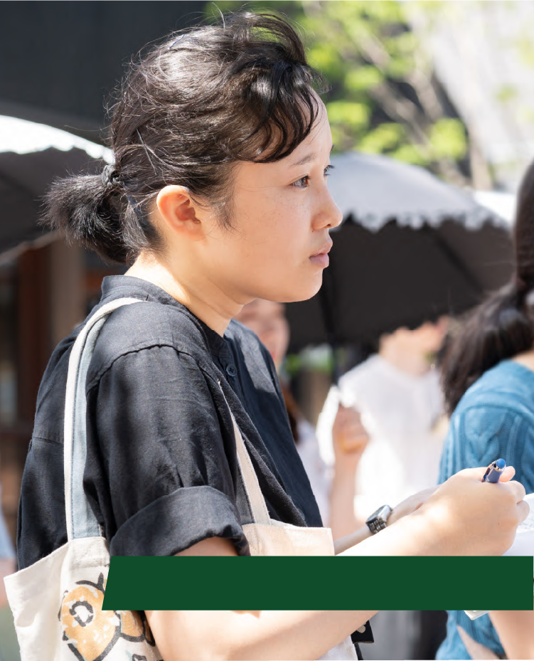
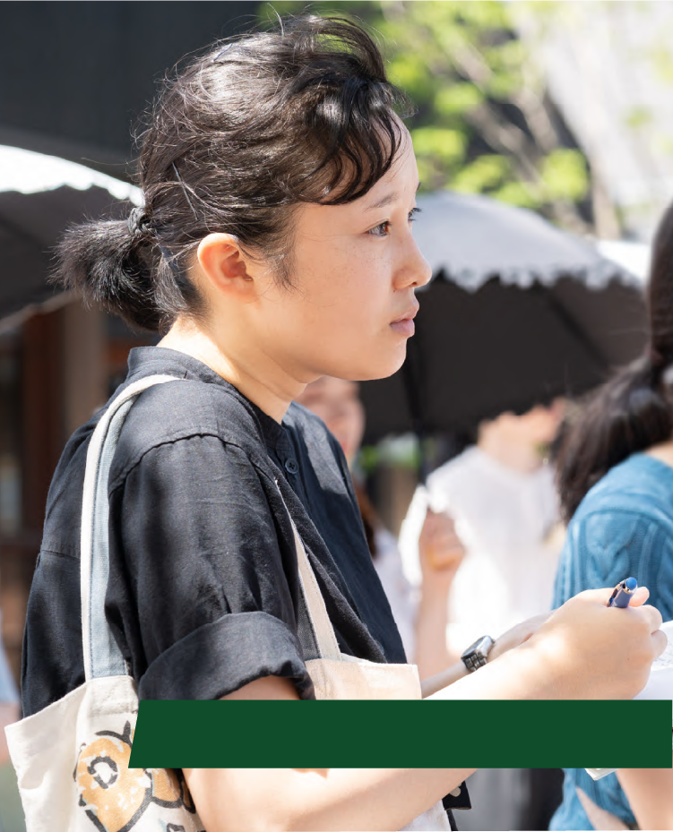

建築で
叶えられることの
すべてを。
建築デザイン学部
■さまざまな“つながり”を生み
多様な人々がともに過ごせる空間づくり
■街歩き感覚で鑑賞できる美術
■海外でもさまざまな“つながり”を重視
■40年間、変わらぬ思いがある
■建築における抽象と具体は
二者択一ではない(対談)
■質疑応答
建築デザイン学部
｢建築と環境｣
学部開設記念対談
さまざまな
“つながり”を生み
多様な人々がともに
過ごせる空間づくり
2024年6月13日（木）、日本女子大学の成瀬記念講堂にて「建築デザイン学部開設記念対談」が開催されました。「建築と環境」をテーマに前・後半のプログラムに分かれ、前半は基調講演。建築デザイン学部建築デザイン学科の前身である家政学部住居学科を卒業後に世界的な建築家として活躍され、2024年度から建築デザイン学部の特別招聘教授として着任いただいた妹島和世先生より、これまでに手がけてこられた建築物をご紹介いただきました。
日本女子大学 建築デザイン学部
特別招聘教授 妹島 和世
日本女子大学家政学部住居学科卒業後､同大学院家政学研究科住居学専攻修了｡1987年に妹島和世建築設計事務所を設立し､1995年には西沢立衛氏とともにSANAAを設立｡日本建築学会賞､ベネチアビエンナーレ国際建築展金獅子賞､プリツカー賞､芸術文化勲章オフィシエ､紫綬褒章など､SANAA名義も含めて受賞歴は多数｡現在はミラノ工科大学教授､横浜国立大学大学院Y-GSA教授､大阪芸術大学客員教授なども兼任する｡東京都庭園美術館館長。
日本女子大学
学長 篠原 聡子
日本女子大学家政学部住居学科卒業後､同大学院家政学研究科住居学専攻修了｡香山アトリエ勤務を経て空間研究所を設立し､1997年に本学家政学部住居学科着任｡専任講師､助教授を経て2010年に教授となり､2020年に学長就任｡現在は2期目となる｡主な受賞歴は日本建築学会賞(作品)､東京建築士会住宅建築賞､グッドデザイン賞など｡近著に『アジアン･コモンズ : いま考える集住のつながりとデザイン』(平凡社、2021)がある｡専門は建築設計､住居計画｡
街歩き感覚で鑑賞できる美術
私は「社会や風景の中にどのように建築物を建てたらいいのか」「どうすれば多様な人々が一つの場所で快適に過ごせるのか」ということを一人で作り始めてからずっと考えて来ました。
2004年に私にとってはじめての大きな公共建築物である「金沢21世紀美術館」が完成しました。街を歩くような感覚で連続的にいろいろなアート作品に出会える美術館を作ろうと考えました。外観はスケールを抑え、裏表を作らず、出入口を複数設けて、人々が公園に来るように気楽に入れるように、そして外周をガラス張りにすることで周囲とのつながりを可視化しました。
海外でも
さまざまな“つながり”を重視
スイス・ローザンヌにある「Rolexラーニングセンター」では、壁で仕切るのでなく、大小の丘や複数の中庭でさまざまなプログラムを柔らかく分けながら、全体を大きなワンルームスペースとし、人が自然に出会える空間を作りました。
パリのルーヴル美術館の別館である「ルーヴル・ランス」は、「世界遺産」に登録されている炭鉱跡地エリアにありました。産業遺産をなるべく残し歴史とのつながり、緩やかな斜面の地形を活かそうとして、建物の屋根も床も緩い勾配の形状となりました。館内を歩くにしたがって徐々にアートの世界に入り込んでいく感覚を味わえる空間となりました。
その後、イタリア・ミラノにある「ボッコーニ大学」を手がけた際は、周囲の建物と公園につながる連続性に重きを置きました。ミラノの旧市街の1ブロック1建築が並ぶシティファブリックを継承するように、私も各建物に中庭を設け、“内”と“外”が繰り返されながら連なる建物群を作り、街並みとの連続を表現しました。
40年間、変わらぬ思いがある
日本女子大学の図書館では、学生1人ひとりが使い方をカスタマイズしていける図書館を目指しました。地形の段差に対応するための緩やかなスロープや複数の階段を設けることで、1階のエントランスから地下1階、そして最上階まで、全体をワンルームと感じられるような断面を作り、それぞれの人が全体に散らばる滞在スペースを自分なりに使いながら組み立てていける図書館という世界観を創出しました。
私は、自分で設計を始めた約40年前から現在まで、「多様な人々が一つの場所でともに快適に過ごせる空間づくり」について考えて来ました。今になって振り返りますと、建築家として大切にしていることは基本的に変わっていないことに気づかされます。
建築における
抽象と具体は二者択一ではない
抽象的な意図での設計には限界がある!?
学生より
妹島 先生より
建築家として仕事を始める時の直感のようなものかもしれません。建築物は“外敵から守られる場所”でもあるため閉じないわけにはいきませんが、かといって窓ひとつない箱に閉じ込められたらストレスになります。図書館にしても、広くて明るいスペースで勉強をしたい日もあれば、静かで落ち着いたスペースで過ごしたい日もあるでしょう。そういった気持ちに寄り添い、人々が“うまい具合”に距離を置いたり近づいたりしながら一緒にいられる公園のような空間をつくっていきたいのです。
学生より
妹島 先生より
私が幾何学の円ではなく“自由曲線”を使い始めたのは、より自然で、人体の延長のように感じるからです。人によって良かれと思う曲線は違い、ちょっとしたことで印象が大きく変わります。注意点としては、実際にどうつくるかまで考えること。自由にデザインしても、建てるには図面にしなければならず、さらにそれを作るという工程があります。ただ、さまざまな制約について考えていく過程で、思いもよらない新発見につながることもありますし、自分が望むデザインを再認識できる機会になるときもあります。多くの人の視点に触れると、より深く考えるべきポイントも見えてきますし、より望ましいデザインを考えるきっかけになったりすると思います。
篠原 学長より
「クライアントがいる」という話と同様に、建築は絵画や彫刻とは違って一人ではできず、施工の段階でもアジャストすべき部分もたくさんあります。ただ、そこで新たな気づきも生まれますので、そのプロセスを楽しめるといいですね。
学生より
妹島 先生より
学生時代に取り組んだ設計課題は、主に住居や地域施設。一方、建築学科出身者の多くは、大型施設の設計も経験していますから、大小さまざまな建築物の課題をとおして身につくスキルはあると思います。ですが、結局大切なのは“人が使う場所”という、あらゆる建築物に応用可能な基本的な概念です。それは、住居こそが基本中の基本ですので、これまで住居学科が積み重ねてきた歴史、基盤を活かしながら学びを深めていってほしいと思っています。
篠原 学長より
では最後に、妹島先生から学生たちにエールをお願いします。
妹島 先生より
その時代時代に合う建築物を生み出す原点は、人との活発なコミュニケーションだと思います。今日はみなさんが積極的に質問してくれたので感心し、安心もしました。どうしたって若い世代の方のほうが新しいことについて感じ考えられる力があると思いますので、自分が重要だ、面白いと思うものに向かって進んでいってもらいたいです。がんばってください。